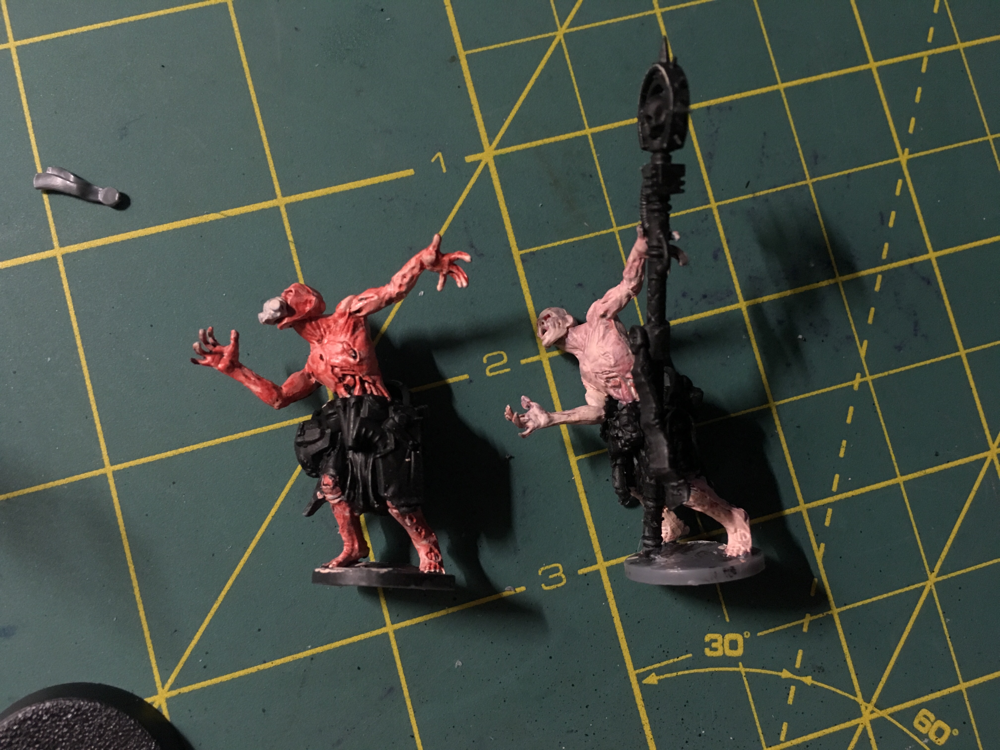

I'm a big Warhammer: 40k fan. My high school friends got me into it after my freshman year of college and now I'm hooked. I play the Imperial Guard (Astra Militarum) faction. I recently decided that I would make my army theme be the personal army of a powerful Inquisitor. I really like kitbashing (creating unique models from bits of different model sets) to make each of my guys uniques. I plan on having all sorts of custom characters with backstories and whatnot. I'm also planning on running a narrative campaign for my friends in thenear future. Imperial will probably create a page for that in the future. Anyway, here is a huge dump of my images:


